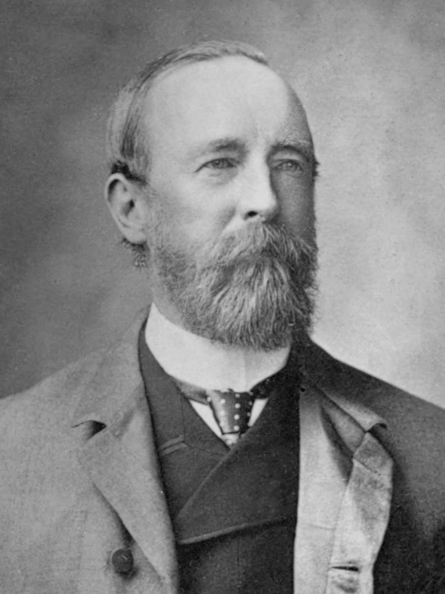
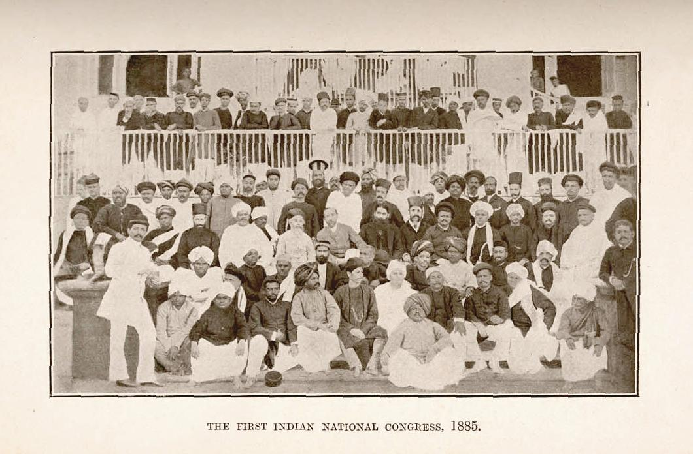
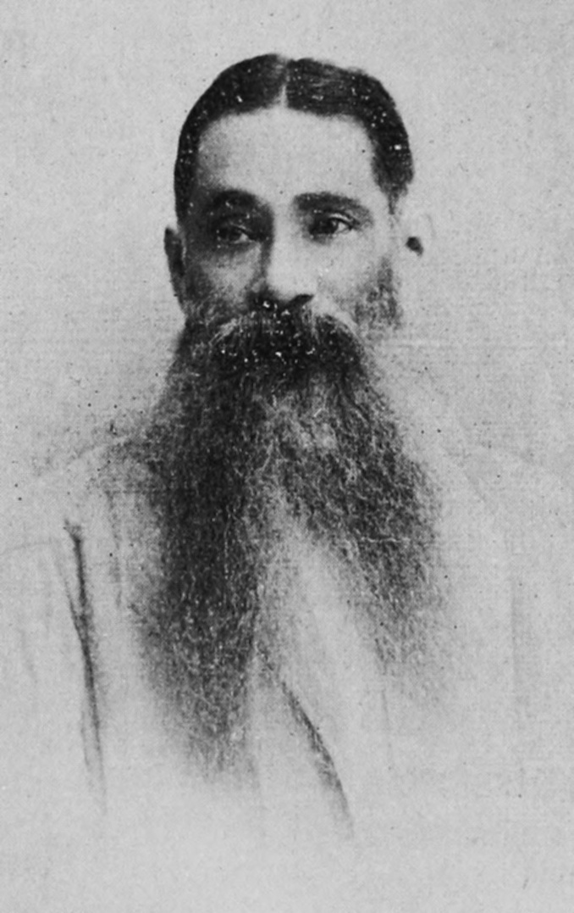
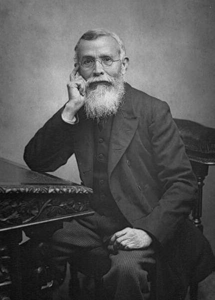

| Item | Detail |
|---|---|
| Date | December 28–31, 1885 |
| Venue | Gokuldas Tejpal Sanskrit College, Bombay |
| First President | Womesh Chunder Bonnerjee (W.C. Bonnerjee) |
| Chief Organiser | Allan Octavian Hume (A.O. Hume) — "Father of the INC" |
| Delegates | 72 (from across India) |
| Viceroy | Lord Dufferin (1884–1888) |
| Aim | Provide a forum for educated Indians to voice grievances (constitutional methods) |


The "Safety Valve Theory" was propounded by Lala Lajpat Rai in his book Youngman. It states that Hume, with the approval of Viceroy Dufferin, founded the INC as a "safety valve" — a controlled outlet for Indian discontent, preventing a violent revolution.

| Year | Place | President | Significance |
|---|---|---|---|
| 1885 | Bombay | W.C. Bonnerjee | Foundation; 72 delegates |
| 1886 | Calcutta | Dadabhai Naoroji | 2nd session; merge with National Conference (Surendranath) |
| 1887 | Madras | Badruddin Tyabji | First Muslim President; women delegates admitted |
| 1888 | Allahabad | George Yule | First British President |
| 1890 | Calcutta | Pherozeshah Mehta | "Lion of Bombay"; constitutional methods |
| 1893 | Lahore | Dadabhai Naoroji | 2nd presidency of Naoroji |
| 1896 | Calcutta | Rahimatullah Sayani | Rise of Extremist tone |
| 1905 | Banaras | G.K. Gokhale | Bengal Partition (Oct 1905) — Swadeshi begins |
| 1906 | Calcutta | Dadabhai Naoroji | Four-fold programme: Swaraj, Swadeshi, Boycott, National Education |
| 1907 | Surat | Rash Behari Ghosh (Moderate) | The Surat Split — Moderates vs Extremists |
| Aspect | Moderates (1885–1905) | Extremists (1905–1919) |
|---|---|---|
| Leaders | Dadabhai Naoroji, G.K. Gokhale, Pherozeshah Mehta, Surendranath Banerjea, R.C. Dutt | Bal Gangadhar Tilak, Lala Lajpat Rai, Bipin Chandra Pal (Lal-Bal-Pal), Aurobindo Ghosh, B.C. Chatterjee |
| Methods | Constitutional: prayers, petitions, protests ("PPP"); legislatures; press; deputations | Direct action: Swadeshi, Boycott, National Education, self-reliance; mass mobilisation; passive resistance |
| Goal | Self-government within the Empire; reforms; larger share in administration | Full Swaraj (Tilak: "Swaraj is my birthright") |
| Ideology | Drain of Wealth critique; economic reforms; liberal constitutionalism | Indian cultural pride; Vedanta; Hindu revivalism (Tilak's Ganapati/Shivaji festivals); anti-West |
| Base | Urban, educated elites; zamindars; professionals (lawyers, journalists) | Lower-middle class; students; peasants (Tilak's Maharashtra base) |
| newspapers | Indian Mirror, Bengalee, Hindustan Review | Kesari & Mahratta (Tilak); Bande Mataram (Aurobindo) |

The INC's journey from Bombay 1885 to the Lucknow reunification in 1916.
| Item | Value | Notes |
|---|---|---|
| Foundation date | December 28, 1885 | Bombay; Gokuldas Tejpal College |
| Founder/Organiser | A.O. Hume | "Father of the INC"; retired British civil servant |
| First President | W.C. Bonnerjee | First Indian MP (1892) |
| Delegates (1st session) | 72 | From across India |
| Viceroy (1885) | Lord Dufferin | Initially supportive, later critical |
| Safety Valve Theory | Lala Lajpat Rai | In "Youngman" — Hume as safety valve for discontent |
| Drain of Wealth Theory | Dadabhai Naoroji | "Poverty and Un-British Rule in India" (1901) |
| Three-time President | Dadabhai Naoroji | 1886, 1893, 1906 (the only one) |
| Bengal Partition | October 16, 1905 | Lord Curzon; triggered Swadeshi |
| Four-fold programme | 1906 Calcutta session | Swaraj, Swadeshi, Boycott, National Education |
| Surat Split | 1907 | Moderates vs Extremists; Rash Behari Ghosh President |
| Lucknow Pact | 1916 | Reunification + Congress-League unity; Tilak & Jinnah |
| First woman President | Annie Besant (1917) | British-born Theosophist; Home Rule League |
| Bihar INC session | 1912 Bankipore (Patna) | Sachchidananda Sinha presided — only Bihar session pre-1947 |